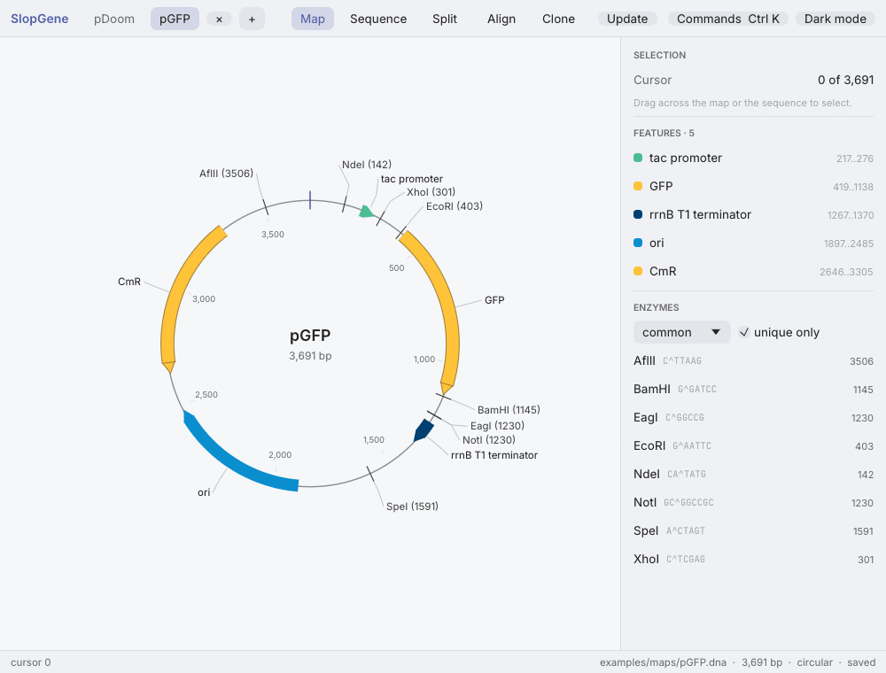
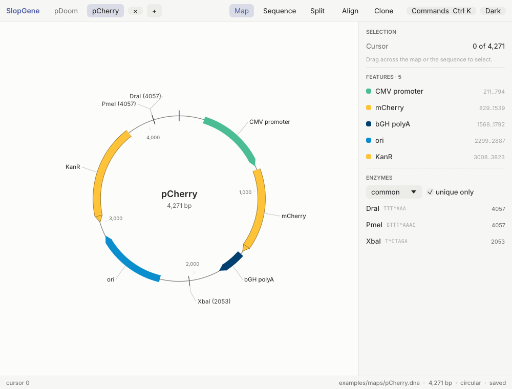
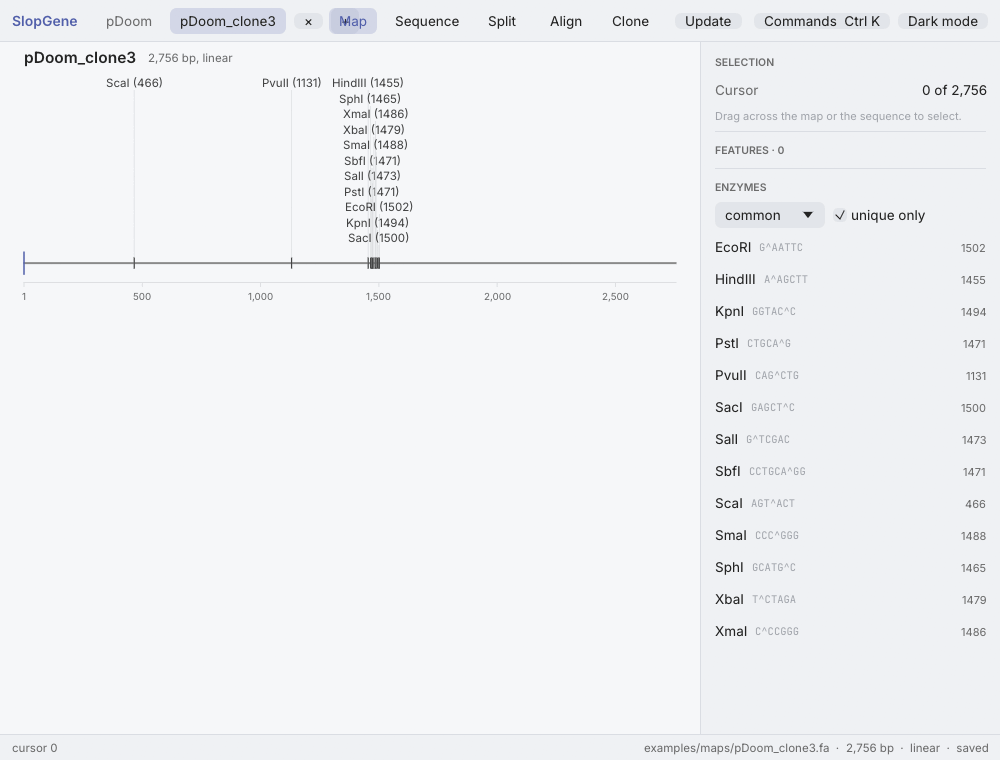

SlopGene
A free, open-source and scriptable plasmid and sequence editor for Windows, macOS and Linux.
- Windowssetup program, .exenewest release
- macOSdisk image, .dmgnewest release
- LinuxDebian and Ubuntu, .debnewest release
- Linuxother distributions, AppImagenewest release
SlopGene on GitHub: source code, documentation and older versions.
Sample Workflow
Restriction cloning

Cloning by PCR

Checking sequencing results

Command line and scripts
SlopGene also enables powerful automated cloning workflows by exposing everything in the app through the slopgene command line and a scripting language, with JSON output for pipelines and AI agents.
// The restriction cloning above, as a script. The protocol it writes opens in the app as the bench.
protocol_new("clone.json", "pDoom.dna", "pGFP.dna", #{ cut_out: "GFP", enzymes: "EcoRI,BamHI" });Run it with slopgene run clone.rhai. The scripting guide lists every function.